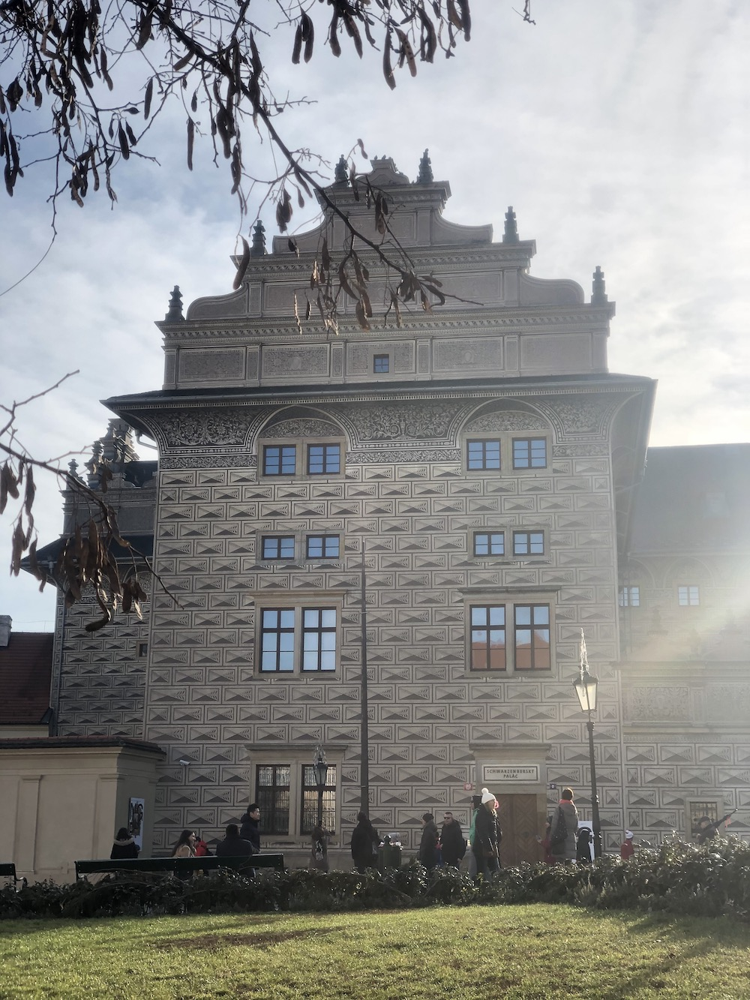
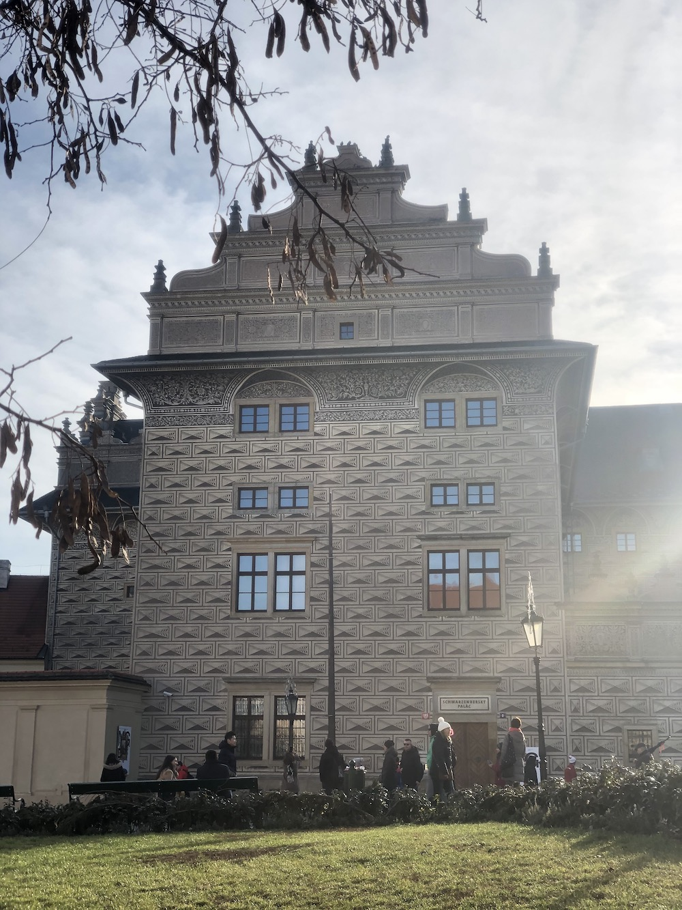

Praga, capital da República Tcheca, é conhecida como "cidade das cem cúpulas" e possui um dos mais belos e antigos centros urbanos da Europa. Também é famosa pelo extenso patrimônio arquitetônico e cultura boêmia. Eu sou particularmente apaixonada pela cidade. Minha primeira vez em Praga foi em 2016 e fiquei tão encantada que voltei em 2019 - e definitivamente pretendo voltar mais vezes. Destaques: culinária, cultura cervejeira, arquitetura.
 

O vídeo a seguir, compartilhado do canal do Youtube da Michele Alves e replicado aqui, traz ótimas dicas de atrações e possibilidades pra quem tem interesse em conhecer mais sobre esse destino.
E, se você quiser mais imersão, aqui vão algumas dicas de livros e filmes que se passam em Praga:
1). A Insustentável Leveza do Ser (1983): A capital da República Tcheca serviu de cenário para a obra de Milan Kundera.
2). Missão Impossível (1996): O filme cult de Brian de Palma foi a primeira grande produção a ser filmada em Praga, em meados dos anos 90.
3). Os Miseráveis (1998): No filme do dinamarquês Billie August, na adaptação do clássico de Victor Hugo, Paris é, na verdade, Praga.